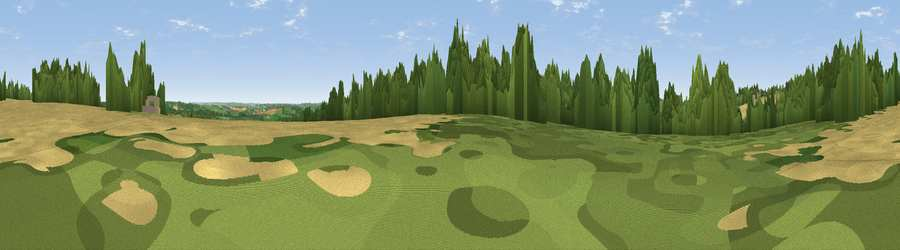

Viewpoint near Temple Guiting
#27568 in England · top 60% of its area beats it · near Temple GuitingThe view, rendered

A 360° render of this exact spot computed from the terrain model, tree cover and land cover — summer colours, afternoon light, calibrated against photographs of famous viewpoints. Real trees, hedges and buildings will differ in detail.
The panorama
Grey silhouette: terrain skyline in each direction (720 bearings, Earth curvature and refraction included). Dashed green: skyline with trees (+15 m) and buildings (+8 m) as obstacles. Blue strip: how far the ground is visible on each bearing.
Where the view opens
Wedge length = distance to the farthest visible ground on that bearing (vegetation-aware). Rings at 10, 25 and 50 km.
What fills the view
41% cropland · 34% woodland · 24% grassland
Angular shares of the visible panorama (visual magnitude), not map area. Landscape diversity 0.47 (0–1 Shannon).
Key numbers
More beautiful places nearby
The staircase of upgrades: each row has a higher view potential than everything closer. Driving times are estimates from straight-line distance, calibrated against real road routing — check an actual route before setting out.
| Place | Direction | Drive | Score |
|---|---|---|---|
| Cutsdean Hill | NNW · 1 km | ~4 min | 56.3 |
| Viewpoint near Hailes | WNW · 5 km | ~10 min | 69.6 |
| Viewpoint near Stanton | NW · 5 km | ~12 min | 75.8 |
| Broadway Hill | N · 7 km | ~15 min | 77.7 |
| Cleeve Hill | WSW · 12 km | ~23 min | 79.8 |
| Nottingham Hill | W · 13 km | ~24 min | 80.9 |
| Bredon Hill | NW · 19 km | ~32 min | 83.0 |
| Black Hill | WNW · 36 km | ~55 min | 83.1 |
51.95961, -1.84387 · source: screening · position refined by local search. Computed location — check access rights before visiting.